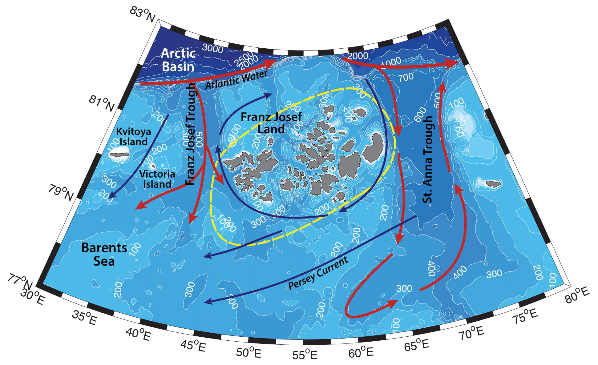

Schematic water circulation patterns and geographical place names in the Franz Josef Land region. Adopted from Ozhigin et al.,2000; Pfirman et al., 2004. Dashed line marks the studied region.
Franz Josef Land is an archipelago consisting of more than 190 islands, 85% of which are covered by glaciers. Oceanography of this region is determined by the conditions on the Siberian shelf, vicinity of the deep Arctic Basin (>3000 m), upwellings of Atlantic Water through the Franz Victoria Trough to the west of the archipelago and St. Anna Trough to the east, polynyas and seasonal ice cover. While the mean depth of the Barents Sea is about 200 m, the troughs around and between the islands can reach up to 500 m depth. Diverse bottom topography largely determines hydrography of the region and its variability.
Cold and fresh Arctic Surface waters (ASW; T<0°C, 31<S<34.2; e.g. Lien & Trofimov, 2013), originated from the ice melt, inflow into the Barents Sea from the north between Spitsbergen and Frans Josef Land, and through the opening between Frans Josef Land and Novaya Zemlya. During summertime depending on the atmospheric situation, Arctic Surface Water can be warmed up to 5 °C ( e.g. Ozhigin et al., 2000). ASW are believed to be involved into anticyclonic circulation around Franz Josef Land archipelago, as well as form a broad Persey Current that is advected southwards and southwestwards across the Great Bank (Loeng, 1991; Maslowski et al., 2004).
Relatively warm and saline Atlantic water (T>3°C, S>35, AW; e.g. Loeng, 1991, Dalpadado et al., 2003) from the Norwegian Atlantic Current (NwAC) in the Norwegian Sea divides into two branches – one flows to the north along the west coast of Svalbard (West Spitzbergen Current or Fram Strait Branch Water, FSBW; Lien & Trofimov, 2013), another turns east onto the Barents Shelf (the North Cape Current – NCaC). Both branches advect nutrients, fish, larvae and zooplankton of Norwegian Sea and Atlantic origin (e.g. Dalpadado et al., 2003).
Murman Current brings modified Atlantic Water (AW; with T>3°C, S>35 in the Norwegian Current; e.g. Loeng, 1991, Dalpadado et al., 2003) from the Norwegian coast to the Novaya Zemlya. AW is getting transformed on the Gusinaya, Novaya Zemlya, and Kanin banks, by getting fresher and colder and turns to the northeast, where exits the Barents Shelf via St. Anna Trough to the north of Novaya Zemlya archipelago (e.g. Ozhigin et al., 2000; Boitsov et al., 2012; Shauer et al, 2002). In the Western Barents Sea Atlantic Water usually takes up the whole water column, while in the east it is often underlaid by cold dense bottom Barents Sea Water and overlaid by Arctic Surface Water.
Atlantic Water (T>0°C, S>34.75; Lien & Trofimov, 2013) that enters the Arctic Basin through the Fram Strait is advected in a boundary current along the continental slope – to the north of the Franz Josef Land archipelago. As it flows eastwards in the Nansen Basin FSBW subducts below the cold halocline layer and forms a subsurface temperature and salinity maximum. The upper boundary of AW, which is considered to be isotherm of 0 °C resides at approximately 100-150 m depth (Rudels and Friedrich, 2000). Some of the FSBW enters the Barents Sea from the north through submarine valleys and canyons – through Franz Josef Trough and into the straits between Kvitoya and Viktoria islands (e.g. Matishov et al. 2009), and along the western flank of the St. Anna Trough (e.g. Loeng et al. 1993; Schauer, Loeng et al. 2002; Lien & Trofimov, 2013) They can bring nutrients and zooplankton to the shelf and inbetween the islands of Franz Josef Land, via upwelling through the troughs.
Cold and dense Barents Sea Water (BSW; -1.9<T<5°C, 34.5<S<35.2), forms on the northeastern Barents Shelf via winter cooling and salinization (transformation of the Atlantic Water as well) due to the brine rejection during ice formation, especially on the banks (e.g. on the Novaya Zemlya Bank, the Central Bank, the Spitsbergen Bank) of the sea, in the area around Franz Josef Land (e.g. Martin & Cavalieri 1989), as well as in leads and flaw polynyas. It is known to flow from the shelf into the Arctic Basin through St. Anna Trough, or occupy the deepest parts of the sea, where it is known as Bottom Barents Sea Water (Midttun L., 1985; Lien & Trofimov, 2013). BSW advected from the south may enter the deep straits of the Franz Josef Land archipelago as well (Ozhigin et al., 2000).
To the south and southwest of the Franz Josef Land the Polar Front divides Arctic waters (in the Persey Current) from the Atlantic. The synoptic variability of the Polar Front is very high, its position can move up to tens of miles in a couple of days, determined by the barotropic circulation of AW and strongly tied to topography (Dobrovolskyi, Zalogin, 1982; Ingvaldsen, 2005). In the central and eastern parts of the Barents Sea, temperature fronts are the more distinguished between Fram Strait Branch Atlantic Water, cold and dense Barents Sea Water and modified Atlantic Water from the North Cape and Murman currents. Strong fronts also form in the strait between Novaya Zemlya and Franz Josef Land, where FSBW meets modified Atlantic Water from the Barents Sea, cold Barents Sea Water, as well as Kara Sea Water and coastal waters from Western Novaya Zemlya Current. Mentioned fronts are places of high concentration of nutrients, phytoplankton and zooplankton, and marine mammals and birds, high biological productivity, as well as places of large hydrographic gradients, hence eddy formation and enhanced mixing and ocean–atmosphere fluxes.
Transpolar drift carries ice across the Arctic Basin towards Fram Strait, hence ice floes influence the structure and dynamics of surface waters in the Northern Barents Sea. During warm season glaciers contribute fresh meltwater to the surface layer of the Franz Josef Land region, as well as influence the hydrochemical structure (Ozhigin et al., 2000). By the end of summer (and in warm years – for the longer period and more often) the region is free of ice. During cold season the majority of the straits between the islands freeze up, land fast ice circles the archipelago as well. During this time flaw leads and polynyas usually form close to the Franz Josef Land between the land fast ice and mobile ice edge of the Arctic Basin. Their position depends on the wind direction, however more often they would form to the south-west of the archipelago. During some years polynyas have been observed to the east of the archipelago.
Ice formation (including land fast ice around the archipelago) and its mobility in the Barents Sea are prone to large variability under the influence of atmospheric forcing and the Atlantic inflow. Icebergs can form from the glaciers of Novaya Zemlya and Franz Josef Land. In the recent years of warming Arctic, the reduction of ice cover in the Barents Sea would lead to more direct atmospheric cooling of the AW during wintertime, and less freshwater input from ice melt (e.g. Boitsov et al., 2012; Lien & Trofimov, 2013). However, one should remember, that climatic variations in the Barents Sea are often of advective nature – heat is brought with the Atlantic inflow (Loeng, 1991). Constant monitoring and research of the variability, transformation, structure and dynamics of the waters in the region is highly important for the understanding of the climate and hydrography, as well as ecosystem of the whole Arctic Basin.